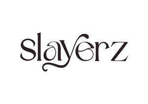

Trade Mark Journal No.2025/020 16 May 2025
UK00004197666 1 May 2025 (3,8,21,26)

- Class 3
- Detanglers; Hairspray; Hair texturizers; Hair pomades; Hair mascara; Hair styling spray; Hair moisturizers; Hair moisturisers; Hair styling lotions; Hair rinses [shampoo-conditioners]; Styling sprays for the hair; Hair lacquers; Hairstyling serums; Hair styling gel; Hair lotion; Hair serums; Pre-shaving lotions; Hair shampoo; Hair decolorants; Lip pomades; Hair spray; Anti-freckle creams; Hair mousse; Hair styling waxes; Styling mousse; Styling gels for the hair; Hair styling gels; Hair mousses; Non-medicated hair shampoos; Hair colourants; Auto-tanning creams; Hair moisturising conditioners; Hair protection mousse; Hair shampoos; Jewellers' rouge; Rouge (Jewellers' -); Styling lotions; Hair emollients; Shoemakers' wax; Hair care serums; Colouring lotions for the hair; Hair balms; Hair sprays; Hair care serum; Mousses being hair styling aids; Hair lotions; Mousses [toiletries] for use in styling the hair; Hair bleach; Non-medicated hair lotions; Diamantine [abrasive]; Destainers; Mascara; Styling paste for hair; Hair creams.
- Class 8
- Apparatus for grooming hair; hairdressing scissors; hand operated tools for hairdressing and cases for the same; hair clippers for personal use (electric and non-electric); non-electric hair care products; non electric hair curling implements; scissors; non-electric hair styling implements; non-electric hair tongs; non-electric hair waving apparatus; hair removing tweezers; hair removing devices; hair cutting apparatus and instruments; electrical hair care products (hand implements); hand tools and implements; hand tools and implements for hair; hand tools and implements for curling, cutting, crimping, straightening, styling, trimming or waving hair; hairdressing appliances included in Class 8, all for personal use; parts, fittings and accessories all for the aforesaid goods.
- Class 21
- Combs for back-combing hair; Shampoo brushes; Mascara brushes; Hair for brushes; Hair brushes; Hair tinting brushes; Shampoo shields; Eyeliner brushes; Hair combs; Carpet shampoo applicators (Non-electric -); Shampoo dispensers.
- Class 26
- On-electric hair curlers; Electric hair curlers; Hair curlers; Tresses of hair; Hair (Tresses of -); Hair tresses; Chignons for Japanese hair styling (mage); Hair curling papers; Papers (Hair curling -); Hair curling pins; Hair barrettes; Hair twisters [hair accessories]; Hair ribbons for Japanese hair styling (tegara); Non-electric hair rollers; Hair rollers (Non-electric -); Hair scrunchies; Hairpieces for Japanese hair styling (kamishin); Hairpieces for Japanese hair styling [kamishin]; False hair for Japanese hair styling (kamoji); Hair curlers, electric and non-electric, other than hand implements; Hair curl clips; Electric hair rollers; Ornamental hair pins for Japanese hair styling (kogai); Hair ornaments, hair rollers, hair fastening articles, and false hair; Curlers; Ornamental combs for Japanese hair styling (marugushi); Bows for the hair; Hair bows; Hair elastics; Hair tassel ornaments for Japanese hair styling (negake); Hair curlers, other than hand implements; Twisters [hair accessories]; Plaits of hair; Foam hair rollers; Sticks for use in styling the hair; Hair coloring foils.
Oreoluwa Salu
Victoria Popo-Ola